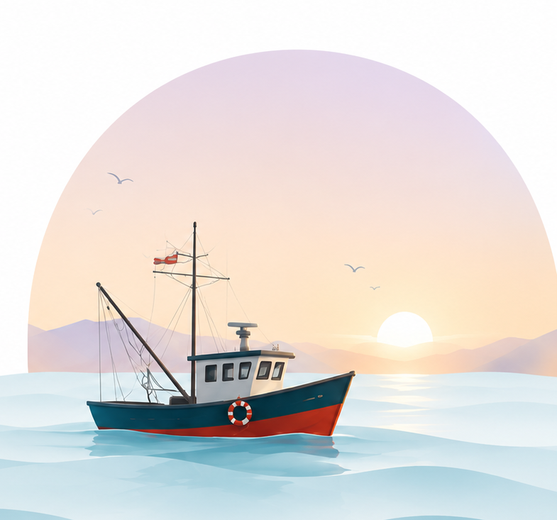
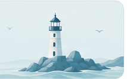
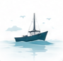
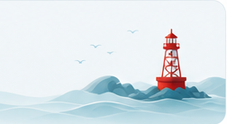
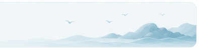
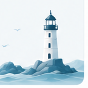
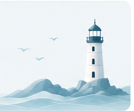
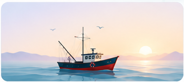
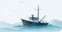
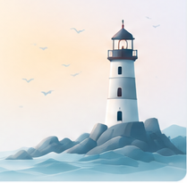

Günaydın, Kaptan
Bugün odaklan, ilerlemeni denize bırak.
OTURUM SÜRESİ
00:00:00

Bildirimler
Henüz bildirim yok.
Odak Zamanı
25:00

Günün Görevleri
Yakalamalarım
0
Bugünkü yakalaman
Toplam Balık
0
En Büyük Seri
0 gün
İstatistikler
%0
Odaklanma
Oranın
Oranın
Toplam Odak
0dk
Tamamlanan Görev
0
Köprünü kur
Odaklan, yakala, ilerle.
Küçük adımlar büyük rotalar çizer.
Küçük adımlar büyük rotalar çizer.

25:00
Hedefin: 1 odak seansı (25 dk)

0%
Kamera İzleme
Kamera: Kapalı
Kamera izleme kapalı
Eğittiğin odak takip sistemi göz kapalılığını, baş yatıklığını ve yüz kaybını izler. Başlatınca tarayıcı kamera izni isteyecek.
—
Uyanık kal!
Lütfen odaklanmaya devam et.
Yüz Durumu
—
Dikkat Seviyesi
—
Son Uyarı
—
Odak İpuçları
- Bildirimlerini kapat
- Tek bir işe odaklan
- Küçük adımlar, büyük ilerleme
- Derin nefes al, devam et
Uyarılar
0Bu oturumda uyarı yok. Böyle devam, Kaptan! ⚓
Günlük İstatistiklerin
%0
Günlük Hedef
Odak Süresi0dk
Tamamlanan Seans0 / 5
En Uzun Seri0 gün
Okyanus Akıntın
Her odak seansı, seni hedeflerine
bir adım daha yaklaştırır.
bir adım daha yaklaştırır.

Odak Seansları
Planla. Odaklan. Tamamla.
Disiplinli küçük adımlar, büyük sonuçlar doğurur.

Görev Özeti
0
Toplam
0 Tamamlandı
0 Kalan
0 Geciken
Kategorilere Göre
Odak İpucu
Büyük hedeflere küçük adımlarla ulaşılır. Bugünkü 25 dakikan, yarınki seni inşa eder.

Toplam Odak Süresi
0dk
Tamamlanan Seans
0
Tamamlanan Görev
0
En Uzun Seri
0 gün
Günlük Odak Süresi
Odak Türlerine Göre Dağılım
Günlere Göre Başarı Oranı
Odak Dağılımı
0dk
Toplam
Saatlere Göre Odaklanma
Düşük Yüksek
Rotan açık, Kaptan!
Odak seanslarını tamamladıkça istatistiklerin burada birikecek.

İpucu
Düzenli odak seansları, uzun vadede büyük sonuçlar getirir. Küçük adımlar, büyük rotalar çizer.
Yakalama Özeti
Toplam Balık
0
Toplam Odak Süresi
0dk
En Uzun Seri
0 gün
Ortalama Seans
0dk

Daha fazlasını yakalamaya hazır mısın?
Her tamamlanan odak seansı denizden yeni bir balık getirir. Süre uzadıkça balık nadirleşir!
Genel Tercihler
Dil
Uygulama dilini seç.
Zaman Formatı
Saat ve tarih gösterim biçimini seç.
Haftanın İlk Günü
Takvim ve istatistikler için haftanın başlangıcını seç.
Ses Efektleri
Alarm ve uygulama seslerini aç veya kapat.
Arka Plan Ambiyansı
Odak modunda arka plan deniz seslerini aç veya kapat.
Kamera ve Odak Takibi
Kamera
Odak takibi için kullanılacak kamerayı seç.
Göz Kapanma Hassasiyeti
EAR eşiğini ayarlar — yüksek hassasiyet kapanmayı daha erken algılar.
Uyarı Eşiği
Kaç saniye göz kapalı kalırsa alarm verilsin?
Yüz Kaybı Eşiği
Yüz kaç saniye görünmezse alarm verilsin?
Kamera Önizlemesi
Kapatılırsa takip sürer ama görüntü gizlenir.
Veri ve Senkronizasyon
Bulut Senkronizasyonu
Verilerini buluta yedekle ve cihazların arasında senkronize et.
Verileri Dışa Aktar
Tüm verilerini JSON olarak dışa aktar (yedek / paylaşım).
Verileri Temizle
Odak süreleri, görevler, balıklar ve tüm istatistikleri kalıcı olarak sil.
Odak Hatırlatıcıları
Belirlediğin aralıklarla odaklanman için hatırlatıcılar al.
Hatırlatıcı Aralığı
Kısa Mola Süresi
Uzun Mola Süresi
Motivasyon Mesajları
Mesajlar belirli aralıklarla kendiliğinden değişir.
Derin sulara dalmadan
büyük balıklar yakalanmaz.

Tema Uygulama temasını seç.
Premium Özellikler
Daha fazlası için yükselt!
- Sınırsız odak seansı
- Detaylı istatistik raporları
- Özel ambiyans sesleri
- Veri yedekleme ve geri yükleme

Kaptan
Odak yolculuğunda ilerlemeye devam et.
Seviye 1
0 / 1000 XP
Çaylak Denizci
Odaklandıkça unvanın yükselir.
Üye olma tarihi—
Toplam odak süresi0dk
Tamamlanan seans0
Yakalanan balık0
Odak Yolculuğun
Toplam Odak Süresi
0dk
Tamamlanan Seans
0
En Uzun Seri
0 gün
Ortalama Seans
0dk
Başarılarım
Unutma, Kaptan
Büyük dalgalar bile küçük adımlarla aşılır.
Odaklan, ilerle ve kendi köprünü kur.
İstatistik Özeti
Hızlı İşlemler
Profil Bilgilerini Düzenle
Ad, e-posta, şifre gibi bilgilerini güncelle.
Bildirim Tercihleri
Bildirim ayarlarını özelleştir.
Hedeflerini Yönet
Odak hedeflerini görüntüle ve düzenle.
Verilerini İndir
Tüm verilerini dışa aktar.